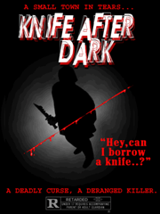

I loved movies back then. Films was films and they was easy to understand.
There was a good guy, an American or something, and a lot of bad guys, often from Eastern Europe or Vietnam or
whatnot, and the good guy would go and kill loads of bad guys, and bring about peace using lots of weapons and
killing anyone who didn't understand or couldn't sing the American anthem. How things change, hey?
Anyway, probably my
favourite film was "Exploder" with Jack Howitzer. It was the follow up to "Evacuator", which was rubbish, but I
loved "Exploder".
Howitzer played Tim, a vet with nothing left to prove who gets called into action and kills loads of foreigners
for no apparent reason in Cambodia or Camden or somewhere. I remember there was loads of body bags and a big
knife with a toothpick. Can't remember much else.
Also very popular
round this time was slasher films, when people would cut each other with knives. You might remember KNIFE AFTER
DARK. It was a load of rubbish, but boy was there a lot of knives, which is a bit like life really.
I also liked lots of dirty movies, especially ones with girls in, but I'm not allowed to write about that,
'cause Doctor Perkins thinks I should be a monk and besides which I saw loads of funny pictures of Thai girls on
his computer. Dirty bastard, still your wife does look like a pig on heat. Vice City had quite an exciting
naughty scene, (this is social history, not filth, you prat) but, well, least said, soonest mended, seeing as
some of them are now in public service and some of the others would put a price on my head.